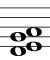
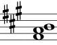
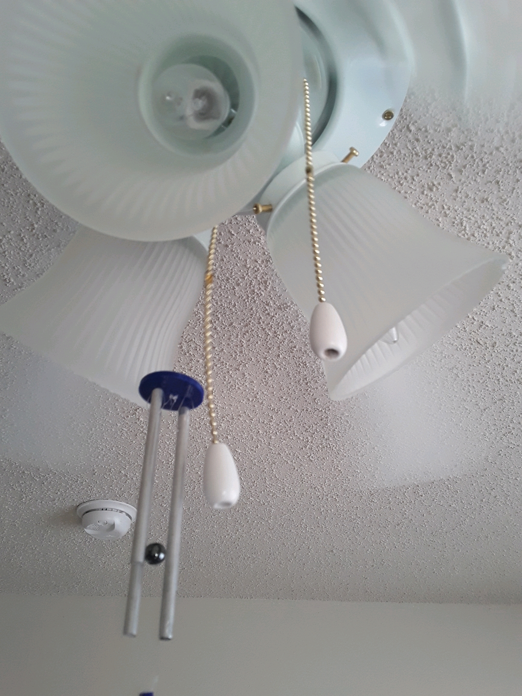

A 21-piece inharmonic chime tree, spanning an interval of a 12th.
I handcraft wind chimes and chime trees of solid-bar and tubular varieties. I precisely tune every chime, making them ideal for acoustical research, musical performance, and ambient listening. All proceeds benefit the North Texas Food Bank.
Solid-Bar Wind Chimes
2000–7000 Hz
Solid-bar wind chimes are the highest-pitch and lightest-weight chimes I make. They ring freely in gentle breezes and produce an unobtrusive, ambient sound that offers the same harmonic span as larger chimes (with perhaps more timbral richness). My three standard tunings are:
C pentatonic

E lydian
A pentatonic
These chimes are $12 each. I charge $4/individual chime for custom-tuned solid-bar wind chimes.
Chirag's wind chimes hang outside on my balcony and make me grateful every time there's a breeze--they are lovely to listen to, with a gentle and clear sound, and I have received compliments from numerous neighbors looking for a set. I keep them next to my hammock on the balcony and it is truly a peaceful happy place to sit!
-Anna S.
In addition to being aesthetically and musically beautiful, my chimes are really durable! They are built to last and I cannot recommend enough!
-Patricia M.
Solid-Bar Chimes Trees
1000–5000 Hz
Unlike the solid-bar wind chimes, my solid-bar chime trees are inharmonically tuned and are constructed in linear rather than circular arrays. Since chime trees are often purchased with the intention of being played in bands and orchestras, I use solid bars of larger diameters (usually 3/8″), which produce a louder sound than my solid-bar wind chimes (for which I use bars with 1/4″ diameter).
My 21-piece solid-bar chime tree is featured on blues/world musician Stephen Houpt's album-in-progress.

Percussionist Mike Camerata recording one of my chime trees at Audio Dallas
I charge $5/individual chime.
Tubular Wind Chimes
50–800 Hz
Tubular wind chimes produce a mellower, deeper, and louder sound than solid-bar chimes. Ambient listeners find the particular tuning of tubular wind chimes most easily discernible. My standard tuning for tubular wind chimes is C pentatonic.

Recording my C pentatonic tubular chimes for Stephen Houpt at Audio Dallas
The tubular chimes cost $20/individual chime.
My chimes are beautifully tuned, aesthetically pleasing, and add a harmonious undertone to my home. I would highly recommend!
-Stephanie R.
One way to make wind chimes ring...
Return to Chirag Gokani's main website